This page contains a family history of Janet Hamilton, and her two daughters Nettie and Lottie. Its creation was inspired by the finding of a curious gravestone during lockdown walks in Thirsk, in the spring of 2020.
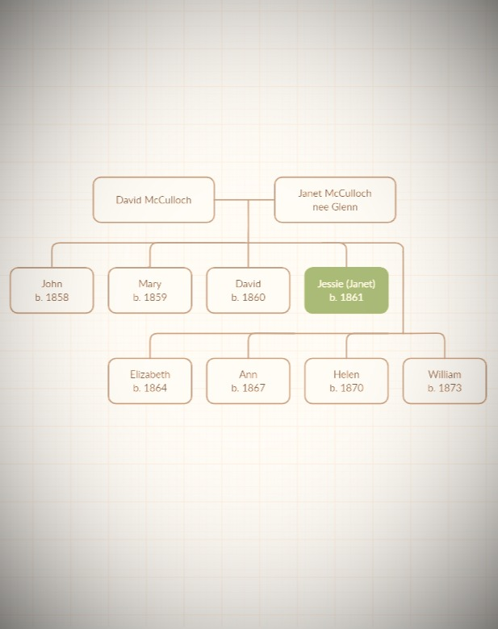
Janet Glenn McCulloch
was born on 9th November 1861 [1], on a street near the seafront in Kirkcaldy, situated across the Firth of Forth from Edinburgh. The fourth of eight children, she is listed on both the 1871 and 1881 census as "Jessie", perhaps to distinguish her from her mother, also named Janet McCulloch (neé Glenn).
By 1884 Janet has moved to Glasgow, and is married on 22nd February to John Henderson Hamilton [2], a Glaswegian qualified iron turner. Janet also has a trade; she is listed as a dressmaker on her marriage certificate. They live at 79 Plantation Street, Govan, a working class area consisting of shipbuilding yards and Victorian tenement housing. John's likely place of work was Fairfield Shipyard (then named John Elder & Co.), the biggest shipyard in the world at that time with a labour force of 5,000.
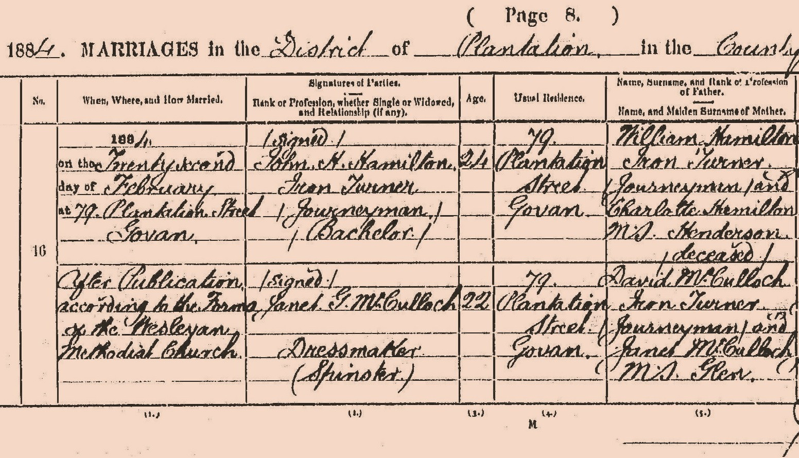
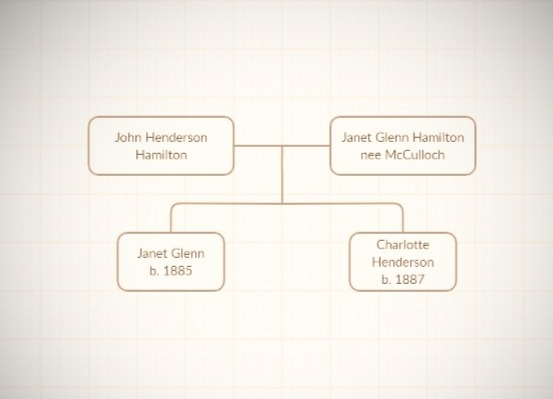
Fourteen months after their marriage, Janet and John welcome a baby girl into the world. A namesake, Janet Glenn Hamilton born on 8th April 1885 [3]; she is known as Jeanette or Nettie. Nearly two years later she is joined by Charlotte (Lottie) Henderson Hamilton, born on 7th March 1887 [4]. Both girls are birthed at 3 Burndyke Street Govan. Life in industrial Glasgow in the 1880s was dirty and overcrowded; ill health and early death were pervasive. Around the time of the birth of the girls, one in seven babies died in Glasgow in their first year.
Nettie and Lottie survive early infancy despite the odds, however John is not as lucky. He dies on 3rd June 1888 [5] at the Western Infirmary in Glasgow, at just 28 years old. His cause of death reads "Chronic and granular disease of kidneys — unknown chronic vomiting ending in Haematemesis [vomiting blood] with bleeding gums. Erythema [redness of the skin] and Erysipelas [a type of cellulitis] of face 48 hours before death. Convulsions 15 hours before death."
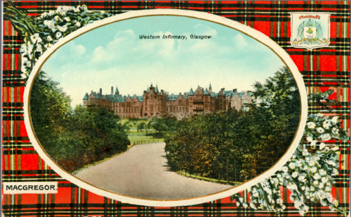
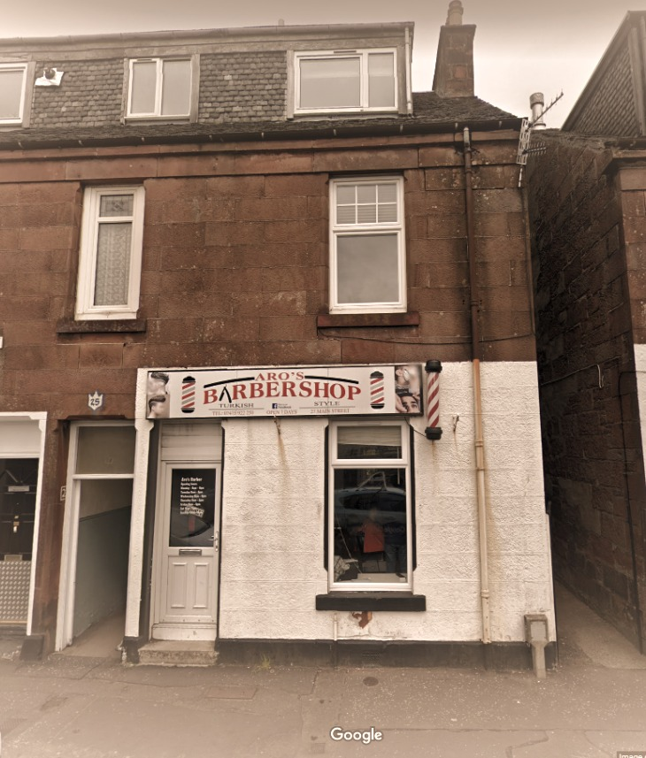
Widowed at the age of 26 with two young children, Janet leaves Glasgow and relocates to Alexandria in Dumbartonshire, seventeen miles north of the city. In 1891 she can be found living at 25 Main Street, Bonhill, with Nettie (aged 5) and Lottie (aged 4 — incorrectly transcribed on the electronic census records as Charles instead of Charlotte) [7]. Most likely Janet, Nettie and Lottie are renting a single room in the building, which also housed sixteen other people.
We learn from Janet's obituary [8] that she also suffers from ill health, and subsequently leaves the children with their grandmother in Scotland "in search of better health in a more temperate clime". At some point in the year after the 1881 census is taken, she emigrates to Australia, however ships passage records for her travel cannot be found.
Whilst their mother is away, the girls move around the corner to a new residence at 2 Gilmour Street with their grandmother. A stone's throw across the street can be found the Gilmour Institute for Men. These days a public library, in 1884 it was opened as a "place for mental recreation and moral improvement, as a counter-attraction to the gin palaces of the Vale of Leven" [9].
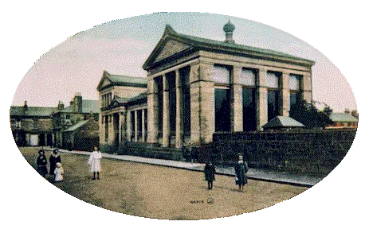
Having travelled to Australia and "finding the climate benefited her health, [Janet] decided to remain and made arrangements for close relatives in Scotland to join her, bringing with them her two children" [8]. In the event, Lottie, the younger child, travelled first with her aunt Ann and uncle William, leaving Nettie back in Alexandria. One newspaper report refers to Lottie as having "been in ill health for some time. It was with a view to her physical benefit that her uncle and aunt commenced this … journey" [11].
2 November 1892
The Crash
Meanwhile, in the small village of Thornton-le-Moor in North Yorkshire, 25 year old railway signalman James Holmes is tending to his orchard on the afternoon of Monday 31st October, pulling apples for sale at market [12]. Ahead of a twelve hour night shift he usually rested later in the day but decided not to do so on this occasion. On the morning of Tuesday 1st November, he returns home around 7 am having been awake for 24 hours. On arrival he finds that Rosa, his five month old baby girl, has been unwell through the night. James finally falls asleep around 10 am, however only gets a few hours' rest before he is woken by Sarah in a panic. Rosa is having a fit.
James sets off at once to find a doctor, travelling a mile to Otterington station, then catching a lift on a goods train to Northallerton. He reaches the doctor's office but finds that he is out. James hurries the 4½ miles back home to find he is too late. His daughter is dead.
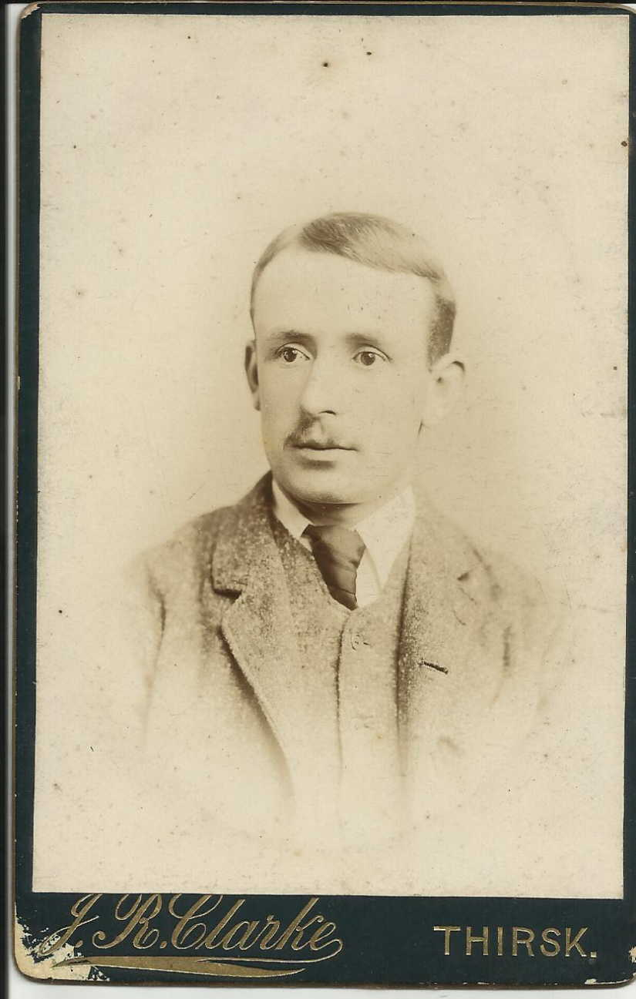
The time is now 2pm, with just four hours before James is due to start his next twelve hour night shift. In his statement to the official Board of Trade enquiry [12] he explains: "After I got home and heard that the child had died, my wife said she really could not stop alone that night… I said I would telegraph for my mother, but that really I was not fit for duty that night, and would try to get relief… I said to [the stationmaster], 'I have had a child die very suddenly. Will you wire to Mr. Pick (the signal inspector) to see if I can be relieved for the night?' I knew that I was not fit for duty." Mr Kirby asked head office for relief, but crucially omitted to convey Holmes' message that he had stated he was not fit for duty. The managers of the North Eastern Railway Company allowed for only 17 relief signalmen in a total cohort of 356 employees for the entire region, and a suitable replacement could not be found that evening. [15]
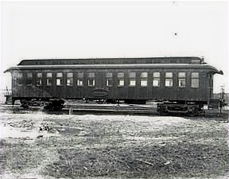
That same night, Lottie, Ann and William are boarding the overnight express train from Edinburgh to London, in the first leg of their round the world journey. Due to heavy seasonal traffic, the "Flying Scotsman" was divided into two portions [11]. Lottie boards the second portion in the 3rd class wooden carriage situated behind the engine and in front of the 1st class Pullman sleeping car [14]. The train pulls away shortly after 11 pm and makes its way south, passing Newcastle at 2.38 am and then Darlington at 3.39 am.
The train reaches the signal cabin north of Thirsk at around 4.20 am. Holmes had managed to perform his duties adequately until shortly after 4 am, when he was overcome with exhaustion having had only a few hours' sleep in the last couple of days. In between the two portions of the express trains, a heavy goods wagon carrying pig iron from Middlesbrough had been temporarily allowed onto the main line. [16]
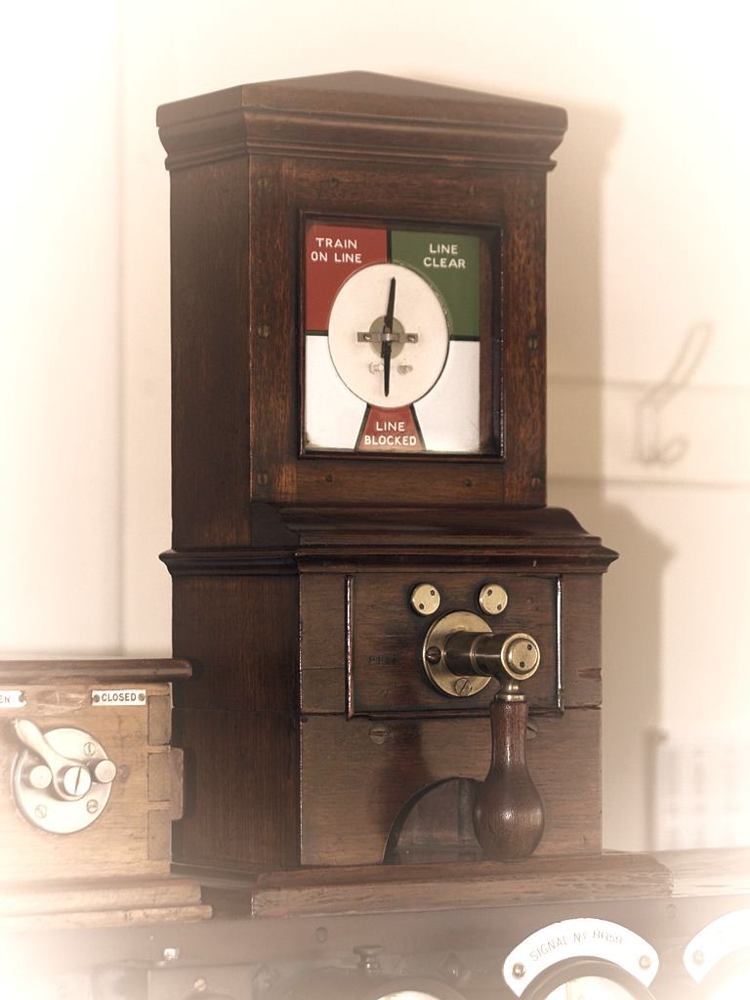
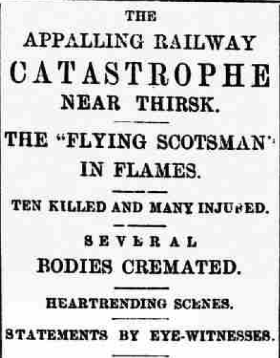
James falls asleep for approximately thirteen minutes, with the goods train waiting outside his signal cabin. He is woken by the signal box to the north alerting him to the oncoming second portion of the express. In his confused state he forgets about the presence of the goods train and gives back the "line clear" signal. He realises almost at once his mistake, but is helpless to do anything other than watch in horror as the express dashes directly into the back of the goods train. The night is foggy — the driver of the express, travelling between 50–60 miles per hour, has no time even to apply the brake after seeing the rear lights of the goods train from only 50 yards away.
The guard at the back of the goods train is killed instantly. Miraculously both the driver and the coalman of the express are thrown from the engine and survive, albeit injured. The engine (number 178) and tender are thrown sideways into a field. The weight of the sturdily built Pullman car smashes straight through the rickety third class cabin in which Lottie, her aunt and uncle were travelling, before landing in the field. Whilst none of the first class passengers were injured, all nine fatalities and a significant proportion of the 39 injured passengers had been travelling in that front 3rd class compartment. In the subsequent inquiry [12], the weight distribution of the differing types of cars was cited as a contributary factor to the death toll, for which the railway company had been negligent, along with the scarcity of emergency staff cover for signalmen. [17]
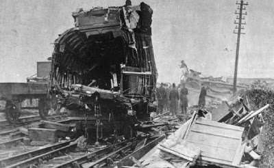
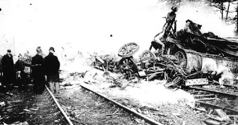
The crash is one of the most dramatic and deadly in railway history to date, and details of the incident were reported in newspapers across the UK. In a typical display of the Victorian class system at work, the Leeds Times [14] chooses to open its report with the fate of the landed gentry travelling on the train before telling the story of Lottie Hamilton. The Marquis of Huntly and Marquis of Tweeddale (both travelling in the Pullman car) were reported to have walked to a neighbouring labourer's cottage to "partake a cup of tea, before resuming their journey to the south". The latter had removed his boots before sleeping and could not locate them in the confusion after the crash, resulting in the humiliation of having to walk to the cottage in just his stockings. [18]
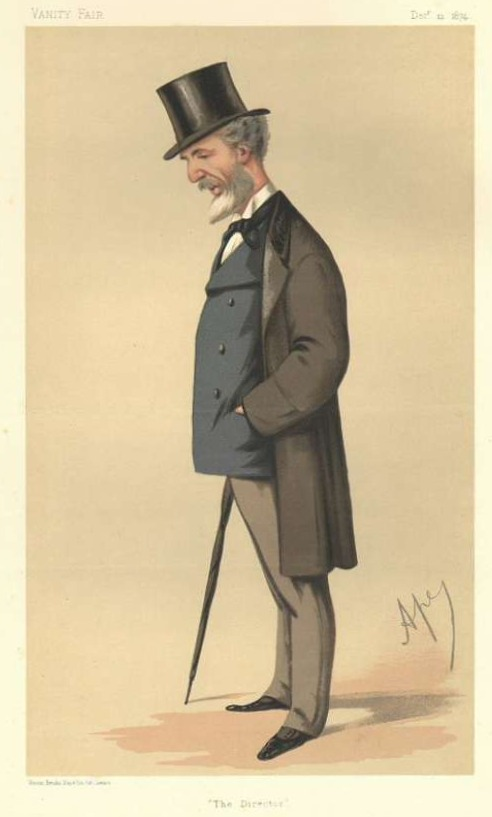
When the attention of the Leeds Times finally does get to Lottie, it is a heart-wrenching story. "One of the most distressing incidents was the rescue of a little girl called Lottie Hamilton. For a long time her screams were heard before she could be extricated; and not only was it evident that she was badly bruised, but she was suffering frightful agony from contact with the flames. She was tenderly carried towards Thirsk, but on the way she expired. A pathetic souvenir of the poor girl's fate was afterwards taken from the wreck. This was her doll, with which she had been playing. Its head was melted off, and the dress and body, like those of its unfortunately little mistress, were burnt" [14].
Its head was melted off, and the dress and body, like those of its unfortunately little mistress, were burnt.
Leeds Times, November 1892
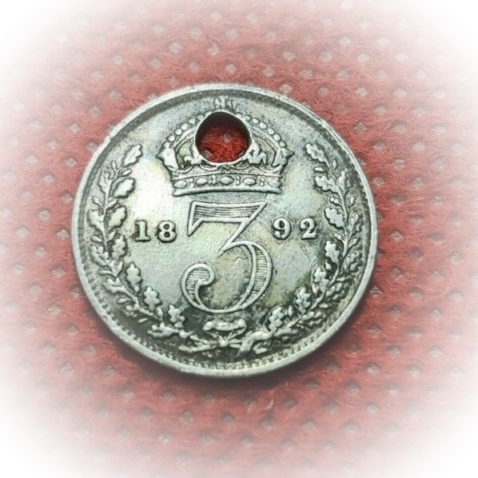
It was through this gift, which was worn round the neck, that I was able to identify the child.
William McCulloch, survivor
William McCulloch had remarkably survived the crash having been thrown free from the wreckage. He reported: "I went to sleep, and was awoke by a sudden and sharp knock on the head. The next thing that I remember was finding myself among a lot of debris… Presently I heard a man shout for water to pour on a portion of the wrecked and burning train, and what appeared to be a little bundle was brought out of the wreckage. It was the charred body of my little niece, who was only five years of age, and whose name was Lottie Hamilton. She was burnt beyond recognition. Just before we left Scotland my mother gave her a threepenny piece with a hole in it, and it was through this gift, which was worn round the neck, that I was able to identify the child." [19]
Annie McCulloch was also killed in the crash. Her body, and that of one other woman, was never recovered due to a fire that engulfed the rest of the train. Charred fragments of bone were all that survived; the recovery of these remains were delayed till the engine could be extricated from the line some four days after the crash [12]. A Mr. Archibald Glenn from Dunbartonshire, probably Janet's uncle, attended to identify Lottie's body [21]. Lottie and Annie are buried together in plot 5S in Thirsk cemetery. A cross headstone marks the spot, gifted by the children of the church schools of Thirsk. Annie's funeral — complete with polished oak coffin and hearse, paid for by employees of the North East Railway Company [22] — was marked with the tolls of the tenor bell of St Mary's church, which can still be heard at the start of church services to this day.

The tragedy even elicited a telegram from the Queen (Victoria, though the message sounds equally correct imagining it read in the voice of Queen Elizabeth II): "Can you convey to the sufferers from the Thirsk railway accident the Queen's sincere sympathy. She hopes the wounded are going on well. Cheerio." [23] (Ed: Last word added for comedic effect but doesn't sound out of place).
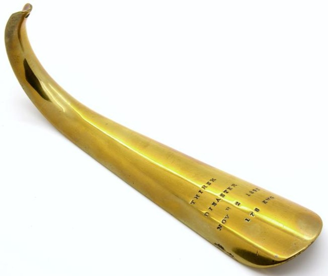
Another side effect of the intense, often sensationalist, reporting was the rise of tragedy tourism. Visitors to the wreck were observed removing parts of the destroyed carriages as souvenirs. The Science Museum holds two in its collection: a commemorative plaque made from a section of wood panelling from a carriage, and a shoe horn fashioned from recycled brass fittings [24].
James Holmes naturally suffered a great deal of anguish over what had happened on his watch. Survivors of the crash report Holmes as being in "great distress… swaying his body to and fro in a condition of pitiable distraction" [25]. Later, whilst giving evidence to the inquest into the accident, he was reported as being very much affected, resting his head upon his hands and frequently giving way to tears.
The newspapers reported an overwhelming amount of public support and sympathy for Signalman Holmes [26]. Messages of condolence and solidarity were published by multiple regions of the Amalgamated Society of Railway Servants, who used the opportunity to lobby (unsuccessfully it seems) against poor working conditions, including a reduction from twelve to eight hour shifts. The Yorkshire Evening Post additionally reported a gathering of 600–700 working men on 13th November [19], members of the Pleasant Sunday Afternoon Society, who met in order to send a vote of sympathy to Holmes.
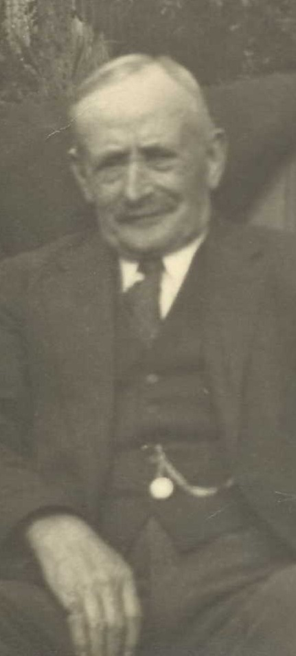
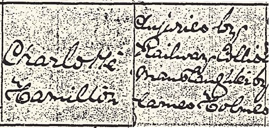
James was tried for the manslaughter of the train guard and passengers in the goods train on 5th December 1892 at York Assizes [12]. The jury found Holmes guilty, but added a very strong plea for mercy. The judge agreed, finding Holmes guilty of culpable manslaughter, but passing an absolute discharge.
James' critical error, it seems, had been to not protest too much when his leave of absence was denied. He had simply stated "it was a bad job as I was in bad fettle for work," adding, "I do not care so much for myself, but I am more bothered about my wife as she is not fit to be left all night by herself" [12]. Lottie's death certificate states "injuries by railway collisions" as the cause of death, when fundamentally it was a fatal case of Victorian stiff upper lip.
Injuries by railway collision — manslaughter by James Holmes.
Lottie Hamilton's death certificate, 1892
James eventually returned to work for the North Eastern Railway Company, however this time as a railway porter and ticket examiner. He ultimately moved south to Middlesex and died at the age of 70.
1893 & Beyond
A World Away
We can't be sure how and when Janet received the awful news of what had happened to her daughter. A short notice is given two days after the crash on the front page of the Sydney Daily Telegraph [27], however longer reports which name Lottie and Annie start to appear from the beginning of December [28], presumably with the arrival of physical copies that had to take the month long voyage around the world. On 19th May 1893 she makes the long journey back to Scotland on the RMS Orient [29]. On 22nd September she makes the return journey one final time, travelling with Nettie [30]. Their voyage is recorded on the ship's passenger log: a Mrs J Hamilton and Janet Hamilton aged 7 years, travelling alone from London to Sydney on the RMS Orizaba. The ship was wrecked in 1905 off the coast of Western Australia — today it's an active dive site.
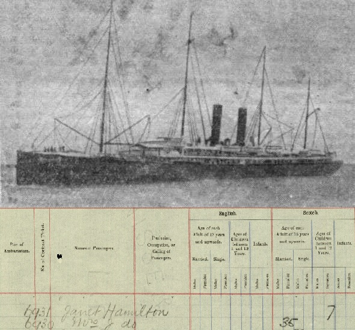
During her first stay in Australia, Janet, who had been brought up in Scotland a strict Presbyterian, heard a preacher from the Seventh Day Adventist Church and was "profoundly impressed by the message he bore". On her return to Australia with Nettie, Janet settled in Ballarat and finding her dress making skills to be very profitable, set out to start her own business. A chance meeting led her to rent a retail property from a lady from the only small group of Seventh Day Adventists in Ballarat at that time, and the coincidence moved Janet to study the message and start observing the Sabbath [8].
The Seventh Day Adventist Church is a Protestant Christian denomination which places an emphasis on the imminent second coming (advent) of Christ. Ellen Gould White, one of the founding members of the movement, had relocated from Maine US to Sydney Australia in 1885 [32] in order to carry the message of Adventism across the world. Within a year of joining the religion, Janet is invited to become matron at the home of Ellen G. White in Avondale Cooranbong (a suburb of the City of Lake Macquarie in New South Wales). The house today is kept as a museum dedicated to the early days of Seventh Day Adventism in Australia.
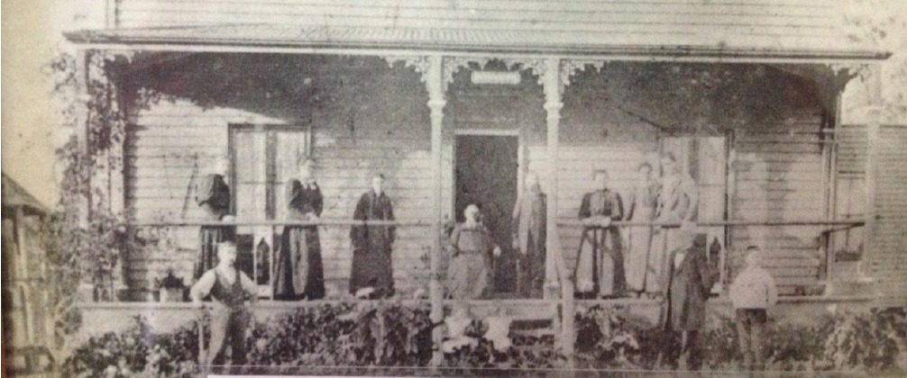
The building of the house at Avondale is shortly followed by a school, Avondale School for Christian Workers (today Avondale University College), where William R Carswell, a former shepherd from New Zealand, is one of the first students [34]. Janet and William marry in 1896, the first marriage officiated by the Seventh Day Adventist Church in Cooranbong, and Janet and Nettie become Carswells. The next year William graduates from Avondale College, and Janet and Nettie join him on his assigned mission of spreading the truth to the people of Toowoomba, Queensland. They canvass door to door selling "Patriarchs and Prophets", a 750 page volume on the conflict between good and evil written by Ellen White [35a–h].
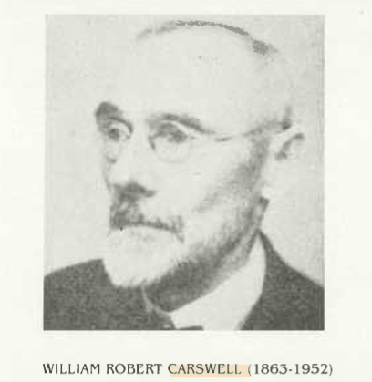
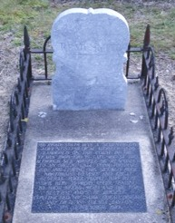
They continue in this line of work until returning to Sydney in 1904 [38], where Nettie, now aged 19, commences a teaching degree at Avondale College [39a–b]. She graduates in 1906, after which Janet and Nettie part ways once more. William is called to New Zealand, and William's knowledge of the Maori language leads him to the Gisborne district where he set about visiting pahs (Maori villages) and translating Adventist literature. William and Janet are joined by two Adventist-trained nurses, Mr and Mrs Reid-Smith. Their presence means that alongside their missionary work they also give instruction in matters of health. Janet is mentioned in multiple sources [32,41] as continuing to have prolonged ill health, and Mr Reid-Smith dies in 1910 in a typhoid outbreak. Janet returns to Australia and William joins her five months later [42].
1907
Singapore & New Zealand
Meanwhile, the Union Conference Records note that "Sister Nettie Carswell is recommended to connect with the work in Singapore" [43], and on the 4th October 1907 she boarded the S. S. Airlie at Brisbane [44].
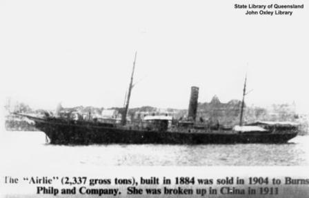
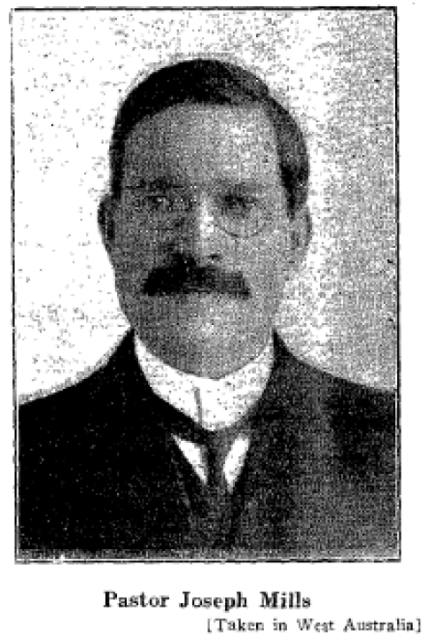
Shortly after her arrival, further letters from the Adventist contingents in Singapore report her marriage at the end of November to a Brother Joseph Mills: "On Sunday, the twenty-eighth, the wedding of Brother Joseph Mills with Sister Nettie Carswell took place. It was quite an ideal little wedding in ideal surroundings… The wedding ceremony was very simple, with no attempt at display in ornamentation. This is just as it should be on all such occasions." [45,46] Joseph Mills is also an alumnus of Avondale College, however, he graduated in 1902 [39b], years before Nettie started her studies. It is most likely they overlapped at Avondale sometime around the turn of the century and had kept up a long-distance engagement thereafter.
Their first endeavour together was to establish the "Eastern Training School" [47], which still exists to this day, albeit in a new location. The original school, situated on land named Mount Pleasant, 5km from the centre of Singapore, placed a lot of emphasis on physical work — students were expected to perform a variety of farm labour tasks. Numbers fluctuated between ten and fifteen in the early period [48].
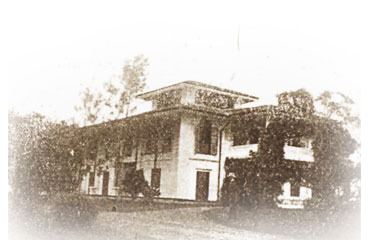
Despite their best efforts, it wasn't long before the school began to get into financial difficulties. Six hectares of wheat, four hectares of maize, and about thirty-five tonnes of potatoes were harvested. The young ladies canned over two thousand large cans of fruit and jam from the orchard and garden. A large barn-like building was erected as a health food factory, but this project never really came to fruition. "At the end of 1910 the school was still $800 in debt. In 1911 enrolments slid further to fifty-seven. A cut in staffing was imperative." [48]
Joseph and Nettie left Singapore just as the school was beginning to get into serious trouble. In a letter from a colleague: "It is with sorrow that we part with Brother and Sister Mills… unfortunately the climatic influences are most seductive and debilitating. One feels no inconvenience at first, and sees no reason for extra caution. It is not long, though, before the fact is forced upon one that one's vitality is at a very low ebb." [40] Tl;dr: Glaswegians don't do heat and humidity.
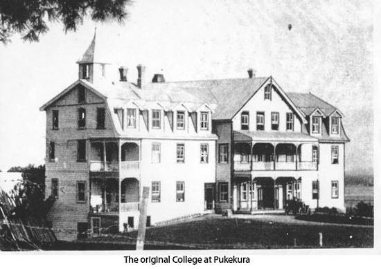
They were assigned their next mission: setting up a school in New Zealand [47]. In 1907 the Australian Union Committee had purchased a plot of 168 hectares at Cambridge, on the North Island, from the proceeds of Ellen G White's book sales. The school was named "Pukekura", Maori for "red hills". Similar financial troubles as had beset the Singapore training school followed the Mills to New Zealand, and a leaked decision to close the school resulted in plummeting registrations [48].
A new school site was found in Longburn, near Palmerston North, named "Oroua" meaning "twice entered" to mark their second attempt at establishing a school in that country. In the early hours of 23rd December 1912, shortly before Nettie and Joseph were due to leave the old Pukekura site with their last belongings, a fire broke out in the far corner of the building. Eyewitnesses reported a strong smell of kerosene, and the new owner Mr Nickle was accused of arson — a claim which was ultimately denied. Nettie and Joseph lost all their personal belongings. All that was salvageable was £72 worth of melted silver from the safe, the paper money having been burnt [49].
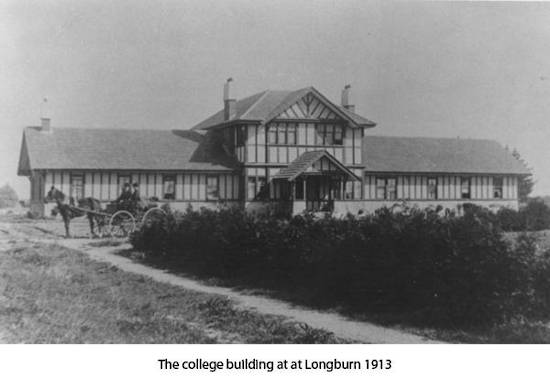
Later Years
Wahroonga
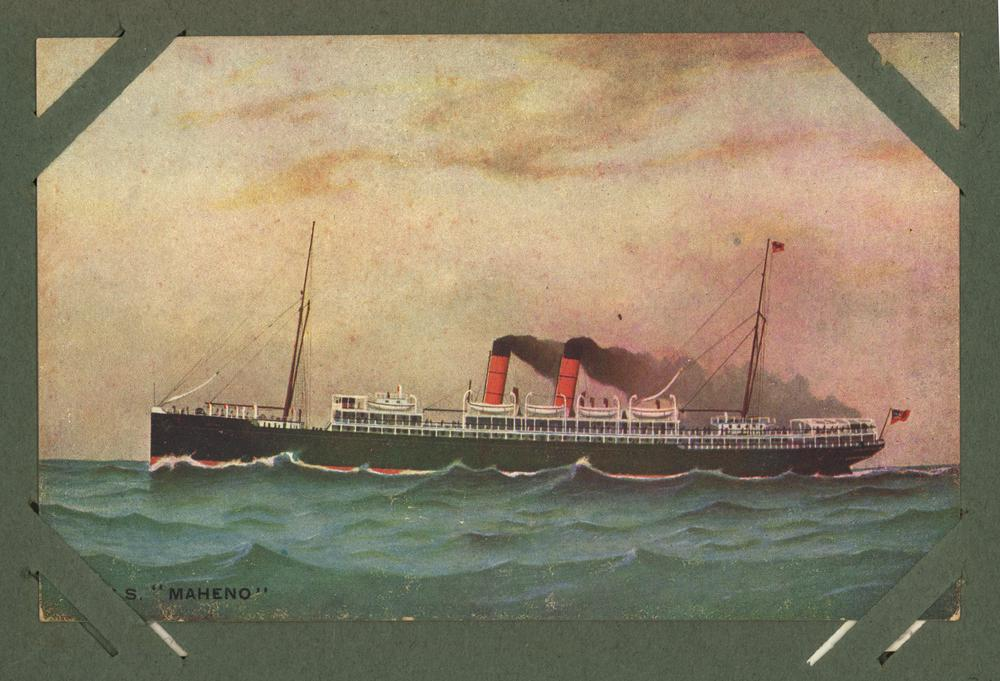
Meanwhile, back in Sydney, William is conducting bible classes at the Sydney Sanitarium [50]. He does get to return to New Zealand for one additional visit in November 1913, to continue the translation of Adventist literature for the Maori people. He and Janet travel on the S. S. Maheno [51] which, in 1935, ran aground on Fraser Island as a result of a cyclone, and whose wreck still sits on the beach.
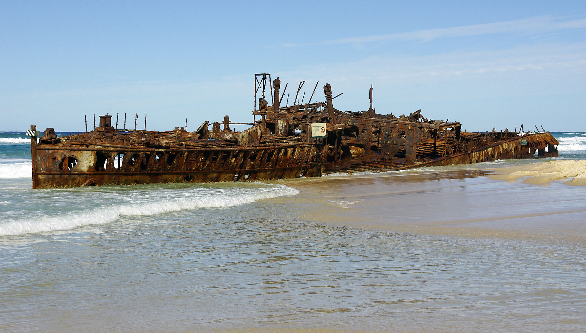
They return to Sydney in March 1914 [53], to be posted once more at the Sanitarium. The "San", as it is known locally, was designed by fellow Adventist Dr Merritt Kellogg, brother of Dr John Harvey Kellogg of cornflake fame and fortune. Seventh Day Adventists have a close history with the development of the breakfast cereal market. They were early proponents of the "health food" movement, as Ellen G. White had coined the phrase. Full-scale factory production of Adventist branded food got off to a shaky start in 1901, but by 1928 they were the trademark owners of Weet-Bix (branded Weetabix in the UK), still one of the most popular breakfast foods on the Australian and UK markets. Today the Sanitarium Health and Wellbeing Company which produces Weet-Bix employs nearly two thousand staff and has a turnover of $300 million AUD.
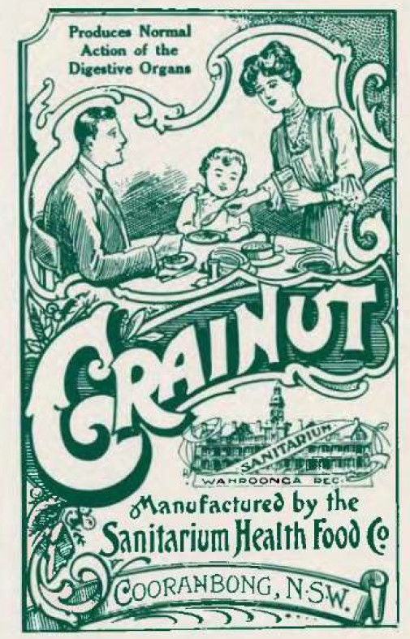
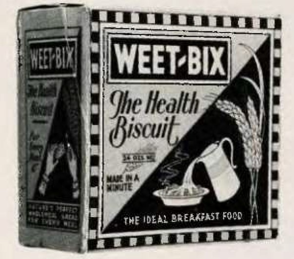
Weet-Bix plays a role in William's later years — he is recorded in 1930 in the midst of the Great Depression as leading work in supplying clothes and food to the poor and needy of Sydney. He writes: "Some of the people have a desperate fight against sickness and unemployment, especially now that work is so hard to obtain. We were rather grieved recently when our supply of wheat-flakes had run out, to have six or seven women with their little ones come along to get a supply. They depend largely on these flakes and biscuits to feed their children." [54]
Whilst Weet-Bix was providing a vital role in basic nutrition for starving children, the history of cornflakes is less palatable. It was originally designed by Dr Kellogg as an anaphrodisiac to promote his view of health reform based on temperance and sexual abstinence. A prominent eugenicist, he also advocated a variety of methods to prevent masturbation. On the other hand, he did also allegedly invent peanut butter so couldn't have been all bad.
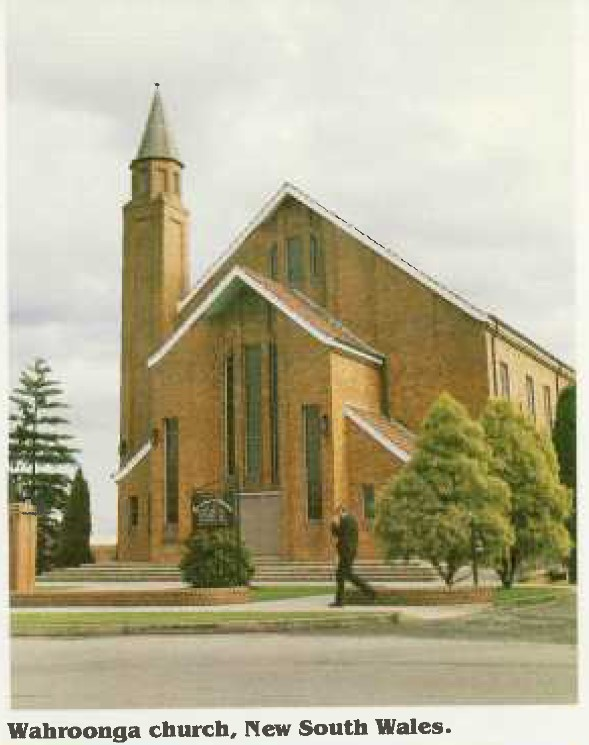
The next few years are met with multiple life changes for Nettie and Joseph. At the end of 1915, they resign their positions at the Oroua Missionary School and return to Avondale, where Joseph would become Principal, thirteen years after graduating there [55]. Four years later they up sticks once more, in order to take over management of the Darling Range School in Western Australia [48], now named Carmel Adventist College.
In October 1920 mention of Janet and William can be found in the Eastern Tidings, the journal of records for Adventists in India [57], living out the quiet life at Wahroonga. The middle years of the twenties are beset with accidents and ill health for our families. First, in April 1924 William is struck by a bus, skidding on the wet road, whilst helping a blind woman to cross. She escapes without major injury, however he suffers a fractured thigh, and spends a number of months in the Sanitarium as a patient, making a full recovery thereafter [58].
Joseph, however, is not so lucky. At the end of 1926 he is taken ill and spends three months also at the Sanitarium [59]. He dies on 8th February 1927 aged just forty-three. His obituary provides details of his marriage to "Miss Jeanette Glenn Hamilton Carswell, his faithful companion through these years, who, with an adopted daughter of tender years, is left to mourn this great loss" [60]. This is the first documented mention of their daughter Ferne Althea Mills, aged just 6 at the time of Joseph's death, later to become Mrs Warboys when she carries on the family tradition of marrying a Seventh Day Adventist missionary. The church Ferne is married in, in 1941, is the same location for Joseph's memorial service in 1927, with work at the Weet-Bix factory stopped that day for the staff to pay their respects. The service opens with the hymn "When Jesus Calls his Jewels", and closes with "Sweet be thy rest, and peaceful thy sleeping".
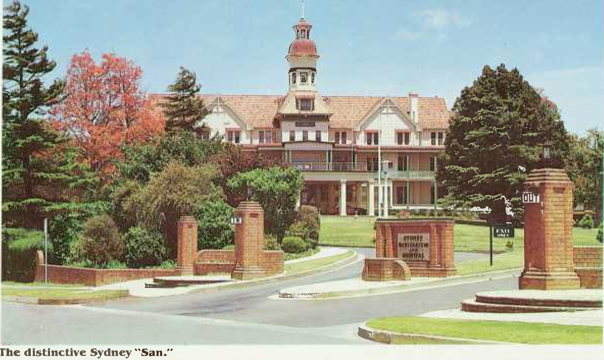
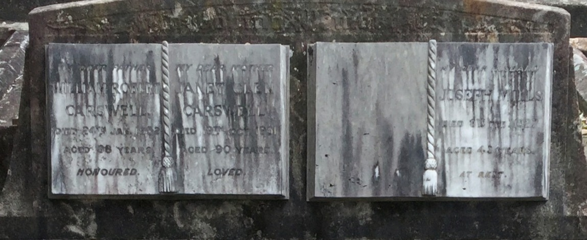
Janet and William live out the rest of their days staying with Nettie at 17 Elizabeth Street, Wahroonga, a mere 10 minute walk from the Sanitarium. Janet dies first in October 1951, with William passing away just 3 months later, aged 89 and 88 respectively [34]. Janet's cause of death is listed simply as senility, with no clue as to the nature of her lifelong illnesses which kickstarted her voyage around the world, cut short their adventures in New Zealand, and resulted in the remarkable legacy of documentation available today through which we can track her family's activities over two continents of space and a century of time. Janet and William are buried together in a plot in Avondale Adventist Cemetery next to Joseph. A space on the headstone is left for Nettie, but this is not her final resting place.
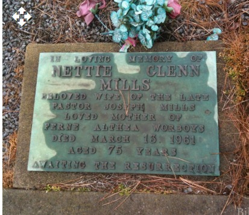
Following Ferne to New Zealand after the death of her mother and step-father, Nettie dies aged 75 in 1961 in Christchurch, and is buried in Ruru Lawn Cemetery. Her gravestone reads "In loving memory of Nettie Glenn Mills. Beloved wife of the late pastor Joseph Mills, loved mother of Ferne Althea Worboys. Died March 15 1961 aged 75 years. Awaiting the resurrection". It's quite literally half a world away from the grave of her little sister Lottie, in the north end of a cemetery on the outskirts of the little North Yorkshire market town of Thirsk. Had Janet and Nettie perhaps visited her grave en route to their ship the Orizaba? Was 1893 the last time a family member had visited Lottie? On our lockdown walks in the cemetery we added flowers to Lottie's grave, but weren't the first people to do so. Viewing the various photos on grave registry websites there is also evidence of her grave being cleaned and tended to; it's strangely comforting to know that the "children of Thirsk" weren't the last to take care of 'dear little' Lottie Hamilton.